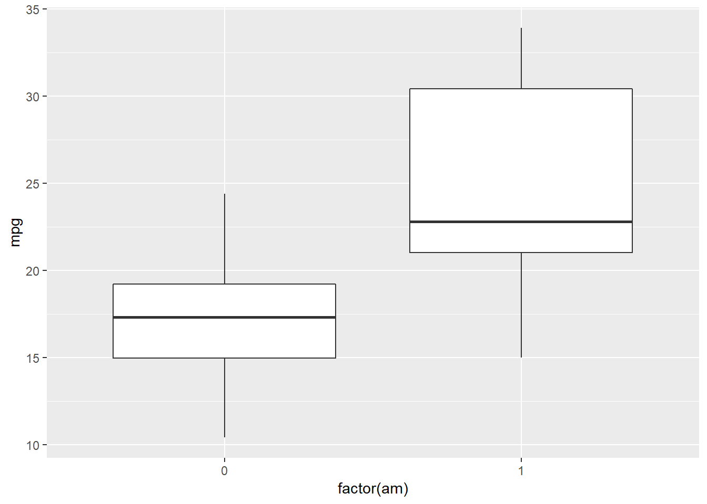

index
RajD
December 27, 2018
Explore dataset- mtcars
data(cars)
# View(mtcars)
head(mtcars)## mpg cyl disp hp drat wt qsec vs am gear carb
## Mazda RX4 21.0 6 160 110 3.90 2.620 16.46 0 1 4 4
## Mazda RX4 Wag 21.0 6 160 110 3.90 2.875 17.02 0 1 4 4
## Datsun 710 22.8 4 108 93 3.85 2.320 18.61 1 1 4 1
## Hornet 4 Drive 21.4 6 258 110 3.08 3.215 19.44 1 0 3 1
## Hornet Sportabout 18.7 8 360 175 3.15 3.440 17.02 0 0 3 2
## Valiant 18.1 6 225 105 2.76 3.460 20.22 1 0 3 1tail(mtcars)## mpg cyl disp hp drat wt qsec vs am gear carb
## Porsche 914-2 26.0 4 120.3 91 4.43 2.140 16.7 0 1 5 2
## Lotus Europa 30.4 4 95.1 113 3.77 1.513 16.9 1 1 5 2
## Ford Pantera L 15.8 8 351.0 264 4.22 3.170 14.5 0 1 5 4
## Ferrari Dino 19.7 6 145.0 175 3.62 2.770 15.5 0 1 5 6
## Maserati Bora 15.0 8 301.0 335 3.54 3.570 14.6 0 1 5 8
## Volvo 142E 21.4 4 121.0 109 4.11 2.780 18.6 1 1 4 2str(mtcars)## 'data.frame': 32 obs. of 11 variables:
## $ mpg : num 21 21 22.8 21.4 18.7 18.1 14.3 24.4 22.8 19.2 ...
## $ cyl : num 6 6 4 6 8 6 8 4 4 6 ...
## $ disp: num 160 160 108 258 360 ...
## $ hp : num 110 110 93 110 175 105 245 62 95 123 ...
## $ drat: num 3.9 3.9 3.85 3.08 3.15 2.76 3.21 3.69 3.92 3.92 ...
## $ wt : num 2.62 2.88 2.32 3.21 3.44 ...
## $ qsec: num 16.5 17 18.6 19.4 17 ...
## $ vs : num 0 0 1 1 0 1 0 1 1 1 ...
## $ am : num 1 1 1 0 0 0 0 0 0 0 ...
## $ gear: num 4 4 4 3 3 3 3 4 4 4 ...
## $ carb: num 4 4 1 1 2 1 4 2 2 4 ...#mtcars$mpg
#table(mtcars$mpg)Including Plots
ggplot(mtcars, aes(x=factor(am), y=mpg)) + geom_boxplot()
# Why do we need to turn am into a factor: because ggplot2 prefers the x-axis of a boxplot to be a factor- that is, a variable that can take one of a finite number of categories as its values- rather than a numeric variable like 0 or 1. Then we put the type of graph, which in this case is geom_boxplotCompare 2 variables
t-test examines whether a numeric variable differed between two categories.
tTest = t.test(mpg ~ am, data=mtcars)
tTest##
## Welch Two Sample t-test
##
## data: mpg by am
## t = -3.7671, df = 18.332, p-value = 0.001374
## alternative hypothesis: true difference in means is not equal to 0
## 95 percent confidence interval:
## -11.280194 -3.209684
## sample estimates:
## mean in group 0 mean in group 1
## 17.14737 24.39231Correlation
we might be interested in testing whether a car’s weight affects fuel efficiency.
ggplot(mtcars, aes(x=wt, y=mpg)) + geom_point()
you can see a negative relationship: a higher weight means a higher miles per gallon and therefore a lower fuel efficiency in. This makes intuitive sense: a heavier car requires more fuel.
The simplest way to test for a relationship between two variables is with a correlation test. This can be done with the cor.test function:
corrTest = cor.test(mtcars$mpg, mtcars$wt)
corrTest##
## Pearson's product-moment correlation
##
## data: mtcars$mpg and mtcars$wt
## t = -9.559, df = 30, p-value = 1.294e-10
## alternative hypothesis: true correlation is not equal to 0
## 95 percent confidence interval:
## -0.9338264 -0.7440872
## sample estimates:
## cor
## -0.8676594The smaller the p-value, the more significant the correlation, so here we can be very confident that a correlation exists.